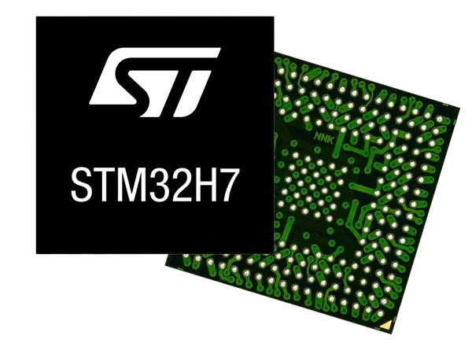

多軸手臂控制器
Multi-Axis Robot Arm Controller

Robot嵌入式控制核心，整合多軸馬達驅動與工業通訊協定，用於智慧製造應用。
Embedded control core for robot arms, integrating multi-axis motor drivers and industrial protocols for smart manufacturing.
2.4GHz Sensor Gateway
2.4GHz Sensor Gateway

無線感測資料收集閘道，支援多點感測器同步通訊與遠端資料傳輸。
Wireless sensor gateway supporting synchronized multi-point communication and remote data transfer.
NB-IoT 隨身裝置
NB-IoT Mobile Device

低功耗行動裝置，搭配 NB-IoT 通訊實現位置追蹤與數據上報功能。
Low-power device using NB-IoT for location tracking and data reporting.
LoRa 長距無線系統
LoRa Long-Range Wireless System
低功耗 LoRa 裝置，用於大範圍環境監控與遠端資料蒐集。
Low-power LoRa devices for wide-area environmental monitoring and remote data collection.
AI 影像辨識應用
AI Vision Recognition

整合 AI 模型與影像擷取模組，實作邊緣運算平台進行即時人臉或物體辨識。
Integrated AI models and camera modules for real-time face and object recognition on edge platforms.